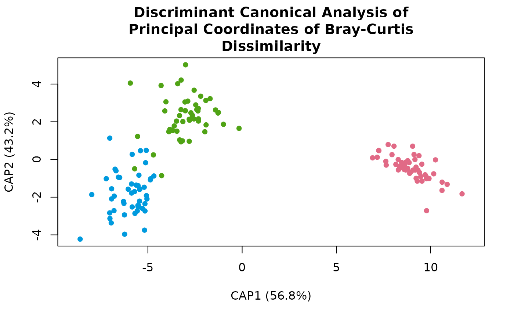

Supervised ordination of samples from any distances: linear discriminant
analysis (lda()) of their first \(m\) principal coordinates
(pcoa()), with \(m\) chosen by leave-one-out classification success,
and a permutation test of the separation of the groups (Anderson &
Willis 2003; "CAP" in PRIMER-PERMANOVA+). Gives the same number of axes,
squared canonical correlations and classification success as
BiodiversityR::CAPdiscrim(). It is not vegan::capscale(), which is
distance-based redundancy analysis.
Usage
capda(
dm,
groups,
data = NULL,
n_pcoa_axes = NULL,
max_pcoa_axes = NULL,
n_axes = NULL,
permutations = 999L,
strata = NULL,
seed = 0L,
cpus = n_cpus()
)Arguments
- dm
A
distobject, such as frombeta_div()orbray(), or a symmetric numeric matrix of distances. Must not containNAs or negative values.- groups
Each sample's group, which the axes separate: a vector or factor with one value per sample, matched to the samples in
dmby name when both are named, else in the same order asdm. Or, whendatais given, the name of one of its columns (or a vector with one value per row ofdata). Values are treated as categories, even if they are numbers.- data
Optional sample metadata: a data frame with one row per sample, holding
groups(andstrata) as columns. Rows are matched to the samples indmby row name, and rows for other samples are ignored; without row names, they must be in the same order asdm. Default:NULL.- n_pcoa_axes
The number of principal coordinates (PCoA axes), \(m\), to run the discriminant analysis on. Default:
NULL, which chooses the \(m\) with the highest leave-one-out classification success, as Anderson & Willis (2003) do (see "Choosing m"). At most \(n - g\) for \(n\) samples in \(g\) groups, and the number of PCoA axes with positive eigenvalues.- max_pcoa_axes
With
n_pcoa_axes = NULL, the largest \(m\) to consider. Default:NULL, which means 50. Reduced, silently, to \(n - g - 1\) (the most that leave-one-out classification can use) and to the number of PCoA axes with positive eigenvalues.BiodiversityR::CAPdiscrim()'smmax(whose default is 10). Ignored whenn_pcoa_axesis given.- n_axes
The number of discriminant (canonical) axes to return. Default:
NULL, which means as many as there are, up to 3. There are at most \(g - 1\), and no more than \(m\); a largern_axesis reduced to that.- permutations
The number of permutations for the test of the trace statistic. Default:
999. Alternatively, a matrix with one permutation of1:nper row, as frompermute::shuffleSet(), to use instead of random ones.0skips the test.- strata
Permute samples only within these groups (blocks), for designs such as repeated measures. With
data, the name of one of its columns, or a vector with one value per row ofdata. Withoutdata, a vector with one value per sample, matched to the samples by name when it has names, otherwise in the same order. Default:NULL(free permutation).- seed
An integer seed for the random permutations. The same seed gives the same p-value. Default:
0- cpus
How many parallel processing threads should be used. The default,
n_cpus(), is the CPU cores this R process may use, within any limits set on it. Results are the same for anycpus.
Value
A numeric matrix with one row per sample and one column per
canonical axis, named "CAP1", "CAP2", etc., as described in
"Ordination result" below. The values are the discriminant scores of
lda() run on the first \(m\) PCoA axes. Attributes:
method:"capda".eig: Each axis's squared canonical correlation \(\delta^2\) between the \(m\) PCoA axes and the groups: the proportion of the variance of the axis's scores that lies between the groups (between 0 and 1).prop: Each axis's proportion oftrace_stat, the sum of \(\delta^2\) over all the canonical axes.n_pcoa_axes: \(m\), the number of PCoA axes used.success: Leave-one-out classification success: a data frame with one row per \(m\) considered (every \(m\) from 1 to the maximum when it was chosen, else just the given one), and columnsn_pcoa_axes(\(m\)),overall(the proportion of all samples classified correctly) and one per group (the proportion of that group's samples classified correctly), named by group.loo_table: The leave-one-out classification table at the chosen \(m\): the number of samples of each group (rows) given to each group (columns), with a columnNAfor samples that couldn't be classified, if any.loo_class: Each sample's leave-one-out class at the chosen \(m\): a factor with the levels ofgroups,NAwhere it couldn't be classified.trace_stat: The trace statistic: the sum of \(\delta^2\) over all the canonical axes (Pillai's trace, for a MANOVA of the \(m\) PCoA axes).p_value: The permutation p-value oftrace_stat: the proportion of permutations, counting the observed one, with a trace at least as large.NAwithout permutations.n_perm: The number of permutations.trace_perm: The trace of each permutation.scaling: The coefficients of the canonical axes on the PCoA axes: one row per PCoA axis and one column per canonical axis, aslda()'sscaling.groups: Each sample's group, as a factor.
Details
Method
Canonical analysis of principal coordinates (Anderson & Willis 2003)
finds the axes that best separate known groups of samples in the space
of any distance measure. It computes the principal coordinates of the
distances (pcoa()), and runs linear discriminant analysis (lda()) on
the first \(m\) of them. capda(dm, groups, n_pcoa_axes = m) gives
the same scores as lda(pcoa(dm, n_axes = m), groups).
The canonical correlations \(\delta\) are the correlations between
each axis's scores and the groups; \(\delta^2\) is the
proportion of the variance of the scores that lies between the groups.
They relate to lda()'s eig (\(F\), the ratio of the between- to
the within-group mean squares) by
\(\delta^2 = F (g - 1) / (F (g - 1) + n - g)\).
Choosing m
Few PCoA axes may miss the differences between the groups; too many fit
noise, and the discriminant analysis needs fewer axes than samples. With
n_pcoa_axes = NULL, capda() classifies each sample by the
discriminant analysis of all the other samples (leave-one-out), for each
\(m\) from 1 to max_pcoa_axes, and uses the \(m\) that classifies
the most samples correctly; on ties, the smallest. A sample that can't
be classified counts as misclassified: one alone in its group (which,
left out, leaves its group without a mean), and every sample once the
within-group covariance of the other samples is singular. The success
for every \(m\) is in the success attribute, so you can check that
the chosen \(m\) is not an isolated peak. The classification uses
each group's proportion of the samples as its prior probability, as
MASS::lda(CV = TRUE) does by default.
Permutation test
The trace statistic, \(\sum \delta^2\), measures how
well the \(m\) PCoA axes separate the groups. The test permutes the
samples' groups (freely, or within strata) and recomputes the trace on
the same \(m\) axes, as Anderson & Willis (2003) do. The choice of
\(m\) is not repeated for each permutation. BiodiversityR::CAPdiscrim()
tests the classification success instead.
Validate the separation
Like lda() and plsda(), capda() is supervised: its plots separate
the groups, if not as well, even when the groups don't differ. The
leave-one-out success and the permutation test are the evidence; the
plot is not.
Matching BiodiversityR
BiodiversityR::CAPdiscrim(dm ~ groups, data, m = 0, mmax = 10) gives
the same \(m\), classification success (its percent and
percent.level, as percentages), leave-one-out classes (CV) and
discriminant scores (x, up to each axis's sign) as capda(dm, groups, data, max_pcoa_axes = 10), and its F is lda()'s eig. Its
manova holds trace_stat, as Pillai's trace. It stops with an error
when a group has a single sample; capda() counts that sample as
misclassified. PRIMER-PERMANOVA+'s CAP scales the axes differently, and
does not use prior probabilities.
Same names in other packages
vegan::capscale() ("constrained analysis of principal coordinates")
is distance-based redundancy analysis, ecodive's capscale() and
dbrda(), not this method. In dist_ord(), 'CAP' selects
capscale; use 'capda' for this one. BiodiversityR's version is
CAPdiscrim().
Axis signs and reproducibility
An axis's sign is arbitrary, so different software can return mirror
images of the same axis. capda() flips each axis so that its largest
score in absolute value is positive, and flips its column of scaling
with it. Results are identical from run to run and for any number of
cpus; random permutations depend only on seed.
Ordination result
Every ordination function (pcoa(), pca(), rpca(), dbrda(), capda(),
capscale(), mds(), nmds(), isomap(), tsne(), umap(), and so
dist_ord()) returns the same kind of
object: a numeric matrix with one row per sample and one column per
axis, so that it can go straight into a data frame. Rows are
named after the samples, when the input has names. Columns are named
after the method: "PCoA1", "PC1", "RPCA1", "dbRDA1" or "CAP1"
(then "MDS1" for unconstrained axes), "MDS1", "NMDS1",
"Isomap1", "TSNE1", "UMAP1", and so on.
Its attributes always begin with these three, in this order, each with one value per column:
method: The method's ID, e.g."pcoa"or"nmds".eig: Each axis's eigenvalue, on the method's own scale:pcoa()andisomap()give the eigenvalues of Gower's centered matrix (sums of squares);pca()andrpca()give variances, which arepcoa()'s divided by \(n - 1\) for \(n\) samples; anddbrda()andcapscale()followvegan, which also divides by \(n - 1\) when any distance is 4 or more.NAformds(),nmds(),tsne(), andumap(), which have no eigenvalues.prop: The proportion of the total variance (or inertia) that each axis explains. Unlikeeig, it is comparable between methods, so use it to label axes.NAwhere it isn't defined.
Attributes particular to the method follow them, and last display,
with the ordination's title for plot() and print(): the method's
name, and for the methods that take distances, the distance matrix's
title, such as "Principal Coordinates Analysis of Bray-Curtis
Dissimilarity" (see ecodive_display). The matrix has class
"ecodive_ord" (as well as "matrix"), so that print() lists the
other attributes by name rather than in full, and plot() draws the
samples on the first two axes, labelled from the attributes, with any
loadings, constraints and centroids on top (see plot.ecodive_ord()).
plot(ord, "Species", iris) colours the samples by a column of
metadata. Subsetting with [, or as.data.frame(), gives a plain
matrix or data frame without the attributes.
References
Anderson, M. J., & Willis, T. J. (2003). Canonical analysis of principal coordinates: a useful method of constrained ordination for ecology. Ecology, 84(2), 511-525. doi:10.1890/0012-9658(2003)084[0511:CAOPCA]2.0.CO;2
Anderson, M. J., Gorley, R. N., & Clarke, K. R. (2008). PERMANOVA+ for PRIMER: Guide to Software and Statistical Methods. PRIMER-E, Plymouth.
Examples
# CAP of iris, from Bray-Curtis distances.
dm <- bray(iris[, 1:4])
ord <- capda(dm, 'Species', iris, permutations = 99)
ord
#> # A matrix: 150 samples × 2 axes
#> # Discriminant Canonical Analysis of Principal Coordinates of Bray-Curtis Dissimilarity
#> # % of variance: 56.8, 43.2
#> CAP1 CAP2
#> 1 9.18 -0.559
#> 2 8.34 -0.369
#> 3 9.77 -0.927
#> 4 9.23 -0.406
#> 5 9.48 -0.905
#> 6 8.06 0.705
#> 7 9.54 -1.15
#> 8 8.59 -0.53
#> 9 9.05 0.704
#> 10 8.66 -0.164
#> # … 140 more samples
#> # Use print(x, n = ...) to see more samples
#> # Attributes: method, eig, prop, n_pcoa_axes, success, loo_table, loo_class,
#> # trace_stat, p_value, n_perm, trace_perm, scaling, groups
plot(ord, 'Species', iris)

# The number of PCoA axes chosen, and the classification success.
attr(ord, 'n_pcoa_axes')
#> [1] 12
head(attr(ord, 'success'))
#> n_pcoa_axes overall setosa versicolor virginica
#> 1 1 0.9200000 1 0.86 0.90
#> 2 2 0.9133333 1 0.84 0.90
#> 3 3 0.9333333 1 0.84 0.96
#> 4 4 0.9533333 1 0.90 0.96
#> 5 5 0.9533333 1 0.92 0.94
#> 6 6 0.9733333 1 0.94 0.98
attr(ord, 'loo_table')
#> loo_class
#> group setosa versicolor virginica
#> setosa 50 0 0
#> versicolor 0 47 3
#> virginica 0 0 50
# The squared canonical correlations, and the permutation test.
attr(ord, 'eig')
#> [1] 0.9770187 0.7435562
attr(ord, 'p_value')
#> [1] 0.01